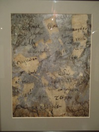

Έργα Αόρατα Τείχη
|
'' χωρίς περίσκεψη, χωρίς αιδώ τριγύρω μας ύψωσαν αυτά τα τείχη''. Αυτά τα τείχη μας άφησαν έξω από τα σύνορά μας. Τα σύνορα κυρίως του πνεύματός μας. Αλλά και τα τεχνητά σύνορα που χωρίζουν τους λαούς.Υπάρχουν φυσικά και τα τείχη που ύψωσαν τα άλλα έθνη και μας άφησαν απέξω. Τείχη εθνικά, κοινωνικά, πολιτιστικά, πολιτικά που ελέγχουν την ζωή μας.Οι ανθρώπινες οντότητες δεν είναι όσο ελεύθερες ήθελαν να είναι, γιατί ας μην ξεχνάμε πως υπάρχουν τα οικονομικά συμφέροντα.Υπάρχει όμως κάπου το φως στο βάθος του τούνελ. Φτάνει να συνειδητοποιήσουμε πως τα τείχη αυτά μας σκλαβώνουν. Μας περιορίζουν. Μας στερούν την ελευθερία μας. Και για να τα δούμε πρέπει να κοιτάξουμε προσεχτικά, γιατί τις πλείστες φορές τα τείχη είναι αόρατα. |

|
|  |